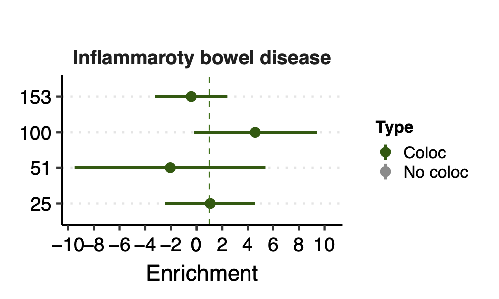
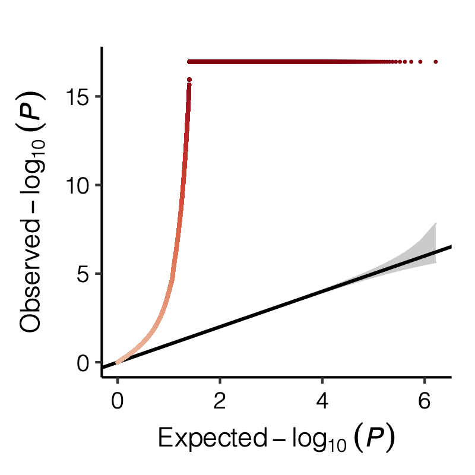

Log2022
Last updated: 2022-06-11
Checks: 7 0
Knit directory: GradLog/
This reproducible R Markdown analysis was created with workflowr (version 1.7.0). The Checks tab describes the reproducibility checks that were applied when the results were created. The Past versions tab lists the development history.
Great! Since the R Markdown file has been committed to the Git repository, you know the exact version of the code that produced these results.
Great job! The global environment was empty. Objects defined in the global environment can affect the analysis in your R Markdown file in unknown ways. For reproduciblity it’s best to always run the code in an empty environment.
The command set.seed(20201014) was run prior to running
the code in the R Markdown file. Setting a seed ensures that any results
that rely on randomness, e.g. subsampling or permutations, are
reproducible.
Great job! Recording the operating system, R version, and package versions is critical for reproducibility.
Nice! There were no cached chunks for this analysis, so you can be confident that you successfully produced the results during this run.
Great job! Using relative paths to the files within your workflowr project makes it easier to run your code on other machines.
Great! You are using Git for version control. Tracking code development and connecting the code version to the results is critical for reproducibility.
The results in this page were generated with repository version 4be9685. See the Past versions tab to see a history of the changes made to the R Markdown and HTML files.
Note that you need to be careful to ensure that all relevant files for
the analysis have been committed to Git prior to generating the results
(you can use wflow_publish or
wflow_git_commit). workflowr only checks the R Markdown
file, but you know if there are other scripts or data files that it
depends on. Below is the status of the Git repository when the results
were generated:
Ignored files:
Ignored: .Rproj.user/
Untracked files:
Untracked: Log2020.Rmd
Untracked: Trans.Rmd
Unstaged changes:
Deleted: analysis/Log2020.Rmd
Deleted: analysis/Trans.Rmd
Note that any generated files, e.g. HTML, png, CSS, etc., are not included in this status report because it is ok for generated content to have uncommitted changes.
These are the previous versions of the repository in which changes were
made to the R Markdown (analysis/Log2022.Rmd) and HTML
(docs/Log2022.html) files. If you’ve configured a remote
Git repository (see ?wflow_git_remote), click on the
hyperlinks in the table below to view the files as they were in that
past version.
| File | Version | Author | Date | Message |
|---|---|---|---|---|
| html | e6a2199 | liliw-w | 2022-06-10 | Build site. |
| Rmd | ed7392a | liliw-w | 2022-06-10 | update rmd |
| html | f60b0b9 | liliw-w | 2022-06-09 | Build site. |
| Rmd | 06afdff | liliw-w | 2022-06-09 | update error bar from se to 0.95 CI |
| html | 0155a0f | liliw-w | 2022-06-08 | Build site. |
| Rmd | 518a1c0 | liliw-w | 2022-06-08 | add more details |
| html | 607ff2b | liliw-w | 2022-06-08 | Build site. |
| Rmd | 397fb52 | liliw-w | 2022-06-08 | add a new week |
| html | 21ae027 | liliw-w | 2022-06-08 | Build site. |
| Rmd | 0db9d74 | liliw-w | 2022-06-08 | add a new week |
| html | 0835a9c | liliw-w | 2022-04-27 | Build site. |
| Rmd | 6d481ca | liliw-w | 2022-04-27 | fix a typo |
| html | 1b8143d | liliw-w | 2022-04-27 | Build site. |
| Rmd | 0626baa | liliw-w | 2022-04-27 | add a new week |
| html | 59c3d71 | liliw-w | 2022-04-25 | Build site. |
| Rmd | 9d92b99 | liliw-w | 2022-04-25 | Add a new week |
| html | 2e6c039 | liliw-w | 2022-04-14 | Build site. |
| Rmd | fae1f4e | liliw-w | 2022-04-14 | adjust fig position |
| html | 3395a26 | liliw-w | 2022-04-14 | Build site. |
| Rmd | d0a08e6 | liliw-w | 2022-04-14 | adjust fig position |
| html | 8b9071e | liliw-w | 2022-04-14 | Build site. |
| Rmd | 424015b | liliw-w | 2022-04-14 | add new week |
| html | 72025bf | liliw-w | 2022-02-04 | Build site. |
| Rmd | 089c609 | liliw-w | 2022-02-04 | new week |
| html | 1274e24 | llw | 2022-01-19 | Build site. |
| Rmd | 9976af6 | llw | 2022-01-19 | new week |
| html | bd69a21 | llw | 2022-01-13 | Build site. |
| Rmd | 28d0a2b | llw | 2022-01-13 | new week |
| html | ec0a2af | llw | 2022-01-04 | Build site. |
| Rmd | 9e5c2e0 | llw | 2022-01-04 | new week |
| html | 97b4ca1 | llw | 2022-01-03 | Build site. |
| html | 4c90bd8 | llw | 2022-01-03 | Build site. |
| Rmd | 6dc3f9c | llw | 2022-01-03 | add a new year |
Jun 08
1. blood trait ldsc
PENDING.
Update enrichment figure error bar from se to 95% CI.
2. autoimmune disease ldsc
coloc
Before we look at the partitioned \(h^2\) of colocalized module in autoimmune diseases, see below for the coloc regions of diseases and modules. Six diseases have coloc regions, corresponding to 8 modules. Number in each cell is the number of coloc regions.

The enrichment
Since there are only a few modules coloc with a disease, I ran S-LDSC only on these coloc modules for each disease. Except Crohns’ disease (cd), I ran all 166 modules, bc this gwas has the highest coloc proportion.
Note: S-LDSC throws an error running on module 156 (haven’t figured out why). So module 156 were not analyzed.
Enrichment: (low resolution figures to save storage space. High resolution figures on RCC)


- Observation:
None of coloc modules have significant h2 enrich.
But module 100 looks promising for Crohns’ disease (Enrichment=3.22, sd=1.83, p=0.23) and ibd (Enrichment=4.6, sd=2.45, p=0.14). So, I looked into it.
(As for why the other modules don’t have enriched h2 at all, maybe that’s because these modules are mostly zinc finger genes? as we discussed in earlier section.)
Module 100
trans-eQTLs of module 100 include two loci:
4:123205143
See loci location and nearby genes here.
Near genes: KIAA1109, ADAD1, IL2, IL21.
This loci’s relation with immune traits?
Looks like this loci has been found to be associated with autoimmune diseases back in 2007. Relevant stories include ref 1, more stories.
5:82996199
May 27
1. A few numbers filled up in manuscript
64% of trans-eQTLs colocalize with GWAS signals of blood traits and autoimmune diseases.
62% of trans-eQTLs colocalize with GWAS signals of blood traits.
11% of trans-eQTLs colocalize with GWAS signals of autoimmune diseases.
2. Module v.s. GWAS heritability
Yang:
Test whether gene modules show enrichment in specific GWAS h2g? Especially GWAS with a coloc trans-eQTL.
Xuanyao:
The colocalized trans-eQTL gene modules showed significant heritability enrichment in the colocalized complex trait.
Just to reiterate our analysis: for each co-localized gene module, we will take all trans genes in the module, get their gene regions+500bp buffer to each end. We will combine all gene regions into a single annotation by using LDSC. Then we run LDSC baseline model+the gene annotation on co-localized traits.
understand LDSC
Goal: Partition the heritability of BMI by functional category, using the baseline model.
Computation goal: estimate \(\tau_C\) via the multiple regression of \(\chi^2\) statistics against \(l(j, C)\).
Define the enrichment of a category to be the proportion of SNP heritability in the category divided by the proportion of SNPs in that category.
Functional categories
full baseline model’ from 24 publicly available main annotations.
For each of these 24 categories, we added a 500-bp window around the category as an additional category to keep our heritability estimates from being inflated by heritability in flanking regions.
In total, 53 functional categories, derived from 24 main annotations.
download LDSC
prepare inputs
- Define functional categories
baseline.@.annot.gz(updated with new annot) SNP v.s. category, if in category
- LD scores (baseline model LD scores)
baseline.@.l2.ldscore.gz(updated with new annot) SNP v.s. category, ldscorebaseline.@.l2.M_5_50(updated with new annot) for each category, the number of SNPs with MAF>5%
regression weights
allele frequencies
GWAS summary statistics
run LDSC
- run partitioned LD scores for new defined functional category and update baseline inputs
Get annotation file:
{prefix}.${chr}.annot.gz(same order of SNPs as in.bim)Use
make_annot.pyscript to compute annot files from a gene set.calculate LD scores:
${prefix}.${chr}.l2.ldscore,{prefix}.${chr}.l2.M_5_50Update
baseline.@.annot.gzUpdate
baseline.@.l2.ldscore.gz, calculate ldscores of SNPs for self-defined categoryUpdate
baseline.@.l2.M_5_50, calculate baseline.@.l2.M_5_50 for self-defined category
- run
munge_sumstats.pyto convert GWAS sum stat file to.sumstatsformat
We recommend only keeping HapMap3 SNPs; to do this, you can download a list of HapMap3 SNPs on LDSC page.
- run
ldsc.py
HapMap3 SNPs
For GWAS SNPs, “recommend only keeping HapMap3 SNPs”.
--w-ld-chrflag gives the location of the LD scores used for regression weights. It should be a non-partitioned .l2.ldscore.gz file that was computed using the regression SNPs. We recommend using HapMap3 SNPs, excluding the HLA region, as default regression SNPs.
Concerns
- Too few genes in a gene set (module)?
Can lead to negative correlation between MAF and L2.
e.g. module 66, 42 genes.
In LDSC tutorial of partitioned ldsc, they have >2400 genes in the example set.
Apr 20 & Apr 27
0. Updated figures
- The ratio of number of NULL SNPs used to estimate \(\Sigma\) over the module size for each module

As a result, I choose to use ratio 50 as the threshold for selecting modules to further look at for signals.
- Updated signal distribution

signal distribution on modules and chrs


1. Some numbers of eQTLGen signals
Out of 166 modules, 129 modules are left after removing modules with the ratio of number of NULL SNPs used to estimate \(\Sigma\) over the module size is smaller than 50.
There are 8116 significant (trans-eQTL, module) pairs under Bonferroni \(p<0.05/9918/129\).
Out of 129 modules, 122 have at least one trans-eQTL from ~10k eQTLGen SNPs.
There are 2161 eQTLGen SNPs that are significant trans-eQTLs for at least one module.
2. Overlaps between trans and cis-e/sQTLs
Overlap of ~10k eQTLGen SNPs and DGN SNPs?
Are trans-eQTLs cis-e/sQTLs in DGN?
1240 trans-eQTLs (out of 2161 ) are also cis-eQTLs, corresponding to 1302 cis-eQTL-Genes.
930 trans-eQTLs (out of 2161 ) are also cis-sQTLs, corresponding to 2807 cis-sQTL-Genes.
Are trans-eQTLs cis-e/sQTLs in eQTLGen?
3. eQTLGen replication
How?
DGN replication in eQTLGen
Out of 3899 DGN (SNP, module) signal pairs, 38 of them are also analyzed in eQTLGen.
Based on these overlaps, the updated p-values threshold for defining replication is: 0.002631579 , under FDR level 0.1.
As a result, out of 38 DGN signals, 38 are replicated in eQTLGen.
The p-values of these signals in eQTLGen range: ( 0 , 8.163248e-12 ).
eQTLGen replciation in DGN
Summary
Out of 8116 eQTLGen (SNP, module) signal pairs, 7577 of them are also analyzed in DGN.
Based on these overlaps, the updated p-values threshold for defining replication is: 1.319784e-05, under FDR level 0.1.
As a result, out of 7577 eQTLGen signals, 69 are replicated in DGN.
The p-values of these signals in DGN range: ( 0 , 1.315094e-05 ).
Interesting signals, in terms of those in eQTLGen but not in DGN. Particularly, those with extremely small eQTLGen p but extremely large DGN p, \(p_{eQTLGen}=0, p_{DGN}=1\).
- p value comparison in eqtlgen and dgn, for replicated and not replicated signals
I looked at the pvalue differences for eqtlgen and dgn. And found that SNPs that were not replicated mostly have extremely small eQTLGen p and extremely large DGN p.
Figure: -log10(trans-PCO P) of eQTLGen and DGN for replicated and not replicated signals.
| Version | Author | Date |
|---|---|---|
| 9bd1beb | liliw-w | 2022-04-27 |
- p value differences across modules
I further looked at the p value differences between eqtlgen and dgn across modules, to see if larger modules have larger p difference? in case eQTLGen large modules have inflated signals.
I didn’t see an association between the p-value difference and module size.

Figure: log10 of p difference between eQTLGen and DGN across modules for replicated and not replicated signals.
| Version | Author | Date |
|---|---|---|
| 9bd1beb | liliw-w | 2022-04-27 |
Next, I will pick some interesting signals in terms of those in eQTLGen but not in DGN.
Interesting signal Example 1 - loci near gene IKZF1
This loci is on Chr7, pos ^50\\d{6}$. The nearby gene
IKZF1 is a TF.
Figure: P values for SNPs near loci IKZF1 and their corresponding modules, for eQTLGen and DGN. SNPs ordered by freq.
| Version | Author | Date |
|---|---|---|
| 9bd1beb | liliw-w | 2022-04-27 |
In DGN, SNPs in this loci are also identified as signals for a few modules.
Interesting signal Example 2 - loci near gene IRF1
This loci is on Chr5, pos ^131\\d{6}$. The nearby gene
IRF1 is a TF.
Figure: P values for SNPs near loci IRF1 and their corresponding modules, for eQTLGen and DGN. Modules ordered by freq.
| Version | Author | Date |
|---|---|---|
| 9bd1beb | liliw-w | 2022-04-27 |
In DGN, this whole loci is missed.
Interesting signal Example 3 - Two SNPs 3:56849749 and
3:56865776 near gene ARHGEF3
Their p-value is 0 in eQTLGen and 1 in DGN for 53 modules.
Figure: Two SNPs that are signals in eQTLGen but not in DGN. And their corresponding modules.
| Version | Author | Date |
|---|---|---|
| 9bd1beb | liliw-w | 2022-04-27 |
However, in DGN, these two SNPs are identified as signals for module
4. Specifically, for module4:3:56849749 and
module4:3:56865776, p is 0. In fact, many other SNPs in the
loci around these two SNPs are also DGN signals and they all correspond
to module 4.

Figure: DGN p values of signals for module 4 in loci ARHGEF3
| Version | Author | Date |
|---|---|---|
| 9bd1beb | liliw-w | 2022-04-27 |
Module 4 was removed from eQTLGen analysis due to its low ratio of \(\frac{\#NULL\ SNPs}{Module\ size}\).
Those additional SNPs in the loci are not included in eQTLGen ~10k SNPs.
4. Many signals on Chr6
Signals near HLA region.
5. cis- genes
How?
Protein coding & lincRNA genes
Three types of “near genes”: nearest, genes within 1e+5, genes within 1e+6.
Result file
See file
/scratch/midway2/liliw1/eQTGen_est_Sigma/postanalysis/signal_rm_infl_ratio_50.txt_cis_genes.txt.
Enrichment of the nearest genes
Apr 13
1. Run PCO on eQTLGen
Why?
To see if new signals in eQTLGen with much larger sample size.
To see the replcation of DGN signals in eQTLGen.
How to run PCO on eQTLGen z’s?
Determine modules - 166 DGN modules.
Sum stat of each SNP on genes in the module.
Problem
\(\Sigma\): no raw expression data for estimating \(\Sigma\).
eQTLGen sum stats from meta analysis, didn’t remove mappability reads.
Solution
Use eQTLGen NULL z’s to estimate \(\Sigma\). By definition.
Remove genes in module that are cross-map with cis-genes of the SNP of interest (SNP-wise PCO).
Observation
signals claimed by Bonferroni correction, i.e. \(0.05/166/9918\)
p-values distribution

Figure: Distribution of p-values.
- Signals distribution for each (module, chr), module, and chr.
Figure: Signal distribution for pair of (module, chr).


Figure: Signal distribution on each module and chr.
2. Simulation - Are eQTLGen PCO signals of large modules inflated?
Problem
We see from the above figure the trend, which is larges modules have more signals. There can be two possible reasons,
Those are true signals, as larger modules with more genes could have more trans-eQTLd.
Those are inflated signals (false positives).
I looked into the second reason
Why is it possible? Because at the very beginning, we first used the correlation matrix of gene samples from DGN to estiamte \(\Sigma\) and use it as \(\hat\Sigma\) for eQTLGen. And we observed all 9918 SNPs are significant, and SNPs’ p-values for each module are almost all 0. That seemed unreasonable.
And we found that may be because of the use of inaccurate \(\hat\Sigma\). So we decided to use \(\hat\Sigma\) from \(cor(Z^{NULL})\) of eQTLGen’s own null sum stat.
We learned that inaccurate \(\hat\Sigma\) could inflate signals.
And using \(cor(Z^{NULL})\) can also lead to inaccurate \(\hat\Sigma\) is because for a module of \(K\) genes, we need to estimate a \(K \times K\) matrix, using \(Z^{NULL}\) of dimension \(m \times K\) with \(m\) NULL SNPs of these genes from eQTLGen.
This can be problematic for large modules with large \(K\), because
There are fewer SNPs with null sum stat for all \(K\) genes in the module, i.e. smaller \(m\).
If \(m\) is not larger enough than \(K\), \(\hat\Sigma\) by \(cor(Z^{NULL})\) is inaccurate.
There can be lots of extremely small p-values. Inflate PCO signals.
Observation
We did observe a decreasing number of null SNPs for larger modules.
Figure: We did observe a decreasing number of null SNPs for larger modules.
| Version | Author | Date |
|---|---|---|
| ec19552 | liliw-w | 2022-04-14 |
Does \(\hat\Sigma\) by \(cor(Z^{NULL})\) lead to inflated PCO signals?
We want to check if \(\hat\Sigma\) by \(cor(Z^{NULL})\) really lead to extremely small pvalues and inflated PCO signals.
How to check?
We use simulations. Specifically,
- Choose a real module from DGN.
- Generate sum stat (Z) of NULL SNPs from the real \(\Sigma\).
- Use these NULL SNPs to estimate a \(\hat\Sigma\).
- Run PCO on another set of NULL SNPs using the true \(\Sigma\) and \(\hat\Sigma\) by \(cor(Z^{NULL})\).
- Compare their p-values.
The p-values using true \(\Sigma\) should represent the true case. By comparing p-values using \(\hat\Sigma\) to it, we should be able to see if \(P_{\hat\Sigma}\) have extreme values.
Simulation setting
I looked at multiple modules with various module size, including module 1-11, 15, 20, 30, 40, 50, 60, 70, 90, 100, 150, 166.
I looked at various \(m/K\) ratios for estimating \(\hat\Sigma\), including 1, 5, 10, 50, 100, 150.

Figure: Histogram of p-values using various Sigma’s.
| Version | Author | Date |
|---|---|---|
| ec19552 | liliw-w | 2022-04-14 |

Figure: QQ-plot of p-values using various Sigma’s.
| Version | Author | Date |
|---|---|---|
| ec19552 | liliw-w | 2022-04-14 |
Observation
P-values looked similar to the true case when ratio \(>50\).
The ratio has smaller inflation effects on smaller modules, e.g. p-values of module 166 using \(\Sigma\) of ratio 20 are closer to that of module 1 using \(\Sigma\) of same ratio.
In eQTLGen analysis, ??? modules have \(m/K\) ratio \(>50\).
3. In DGN, larger module, more signals?
We wonder if this trend also exists in DGN data.
\(\hat\Sigma\): module size v.s. sample size
4. Remaining questions
- Inaccurate \(\hat\Sigma\) leads to false negatives? in DGN?
Mar 30
- eQTLGen analysis
Mar 25
- Signal SNPs genomic location annotation
torus: GTEx
snpEff
Mar 02
1. About “replication of signals in eQTLGen”
In the abstract of The Biology of Genome conference, you added something as
The trans-eQTLs are highly replicable, and all were replicated in the eQTLGen.
At first, I thought you were referring to the replication of the identified trans-eQTLs in eQTLGen. But I didn’t remember we had this observation. So I wondered where this impression came from.
I think maybe because previous section. I looked at what are those lead-SNPs of the colocalized regions (dark green regions). Specifically, are those dark green signals eQTLGen signals (cis- or trans- signals)?
I observed that, out of 74 unique lead SNPs of colocalized regions for all blood-related traits, 65 are included in eQTLGen SNPs. And 63 are eQTLGen cis- or trans- signals.
2. preious eQTGen signals using trans-PCO
| Sigma | #modules | PCO_lambda_thre | #signals |
|---|---|---|---|
| DGN | less | 1.0 | ~367 |
| DGN | less | 0.1 | 9918 |
| DGN | more | 1.0 | ~460 |
| DGN | more | 0.1 | 9905 |
| nullz | more | 0.1 | NA |
At first, we used \(\text{PCO}_{\lambda<1}\) and observed hundreds of eQTLGen SNPs that are significant trans-eQTL signals.
We decided to choose \(\text{PCO}_{\lambda<0.1}\) over \(\text{PCO}_{\lambda<1}\).
Then we observed almost all 9918 eQTLGen SNPs are trans-eQTL signals. We doubted some signals are false positives.
Replication_of_eQTLGen_results_in_trans-PCO_of_eQTLGen_summary_stats
Why_there_are_so_many_eQTLGen_signals
- We thought false positives occurred because we used \(\Sigma\) of DGN for estimating \(\hat{\Sigma}\) of eQTLGen. So we tried using null zscores from eQTLGen to build sigma. We observed a significant drop of pvalues.
Feb 16
1. Simulation
Re-run simulation using \(\Sigma\) from the updated 166 modules of DGN_no_filter_on_mappability.
QQ plot of null distribution.
Figures are stored on server.
Power plot.
{kind=link}
{kind=link}
Jan 26
1. Update coloc figures with less stringent pvalue threshold
Previously, we defined the green regions with module-QTL \(p<1e-8\). This threshold is not premutation based. I looked at the permutation-based p threshold, and it is \(\approx 3e-8\). We’d like to use a less stringent threshold, so I chose \(p<1e-7\) to define the green regions.
In total, we considered three (four) types of coloc. Coloc with (1) 29 blood related traits from ukbb, (2) 11 immune traits, (3) 27 more traits from ukbb. (The 4-th type is coloc with cis genes.)
I updated the figures and tables.
- figures
29 blood related traits from ukbb; earlier result with 1e-8 thre
{kind=link}
{kind=link}
11 immune traits; earlier result with 1e-8 thre
{kind=link}
{kind=link}
27 more traits from ukbb; earlier result with 1e-8 thre
{kind=link}
{kind=link}
- tables with detailed numerical results
2. Other types of modules coloc with traits
Jan 19
1. Comprehensive analysis of coloc regions of trait MS
Add MS’s result to previous coloc analysis (dark green coloc regions)
See earlier section.
dark blue coloc regions
There are 4 dark blue coloc regions, i.e. coloc regions with module-QTL lead pvalue < 1e-5.
| Region | nSNPs | Pval | PP4 |
|---|---|---|---|
| module121:19:10423815 | 140 | 1.5e-06 | 0.98 |
| module108:7:50308811 | 122 | 1.6e-06 | 0.98 |
| module50:7:149331042 | 265 | 2.0e-06 | 0.94 |
| module44:7:50308527 | 69 | 0.0e+00 | 0.89 |
In earlier section, the region “module108:7:50308811” coloc with MS is included in these dark blue regions.
2. More traits, from UKBB
Extracted traits
- How?
I extracted specific traits from ukbb traits manifest file, based on:
Traits from eQTLGen traits
Traits from Mu et al paper
Powerful (and interesting) ukbb GWASs
Sorted by case number of EUR
n_cases_EUR.
- What traits?
26 ukbb GWASs in total, including height, BMI, Cholesterol, Hypertension, Asthma, Type 2 diabetes etc.
Exclude height, as not GWASed for EUR.
Use height sum stat from another meta analysis instead. It also has another BMI sum stat.
Meta analyze inds from GIANT and ukbb.
Meta-analysis of genome-wide association studies for height and body mass index in ~700,000 individuals of European ancestry.
Thus, as a result, 27 GWASs. 22 unique traits.
- Visualize the sample sizes of selected traits

| Version | Author | Date |
|---|---|---|
| 1b40fde | llw | 2022-01-19 |
coloc results {More-traits-from-UKBB}
- Visualize
See figure.

| Version | Author | Date |
|---|---|---|
| 1b40fde | llw | 2022-01-19 |
For detailed numbers, see file.
- In-depth visualization for selected traits (dark blue regions)
{kind=link}
{kind=link}
{kind=link}
{kind=link}
{kind=link}
{kind=link}
Jan 12
1. Make a story out of the trans- signals
More concrete examples
- Trait, gene, trans- signal
SLE signals in Fig. 5.
reflecting the involvement of interferon signaling in SLE pathophysiology

| Version | Author | Date |
|---|---|---|
| 664d0d7 | llw | 2022-01-13 |
- additional examples of trans-eQTL variants associated with traits
ZNF131 locus, age of menarche
Supplementary Figure 11A, rs1532331
FADS1/FADS2 locus, lipid levels
Supplementary Figure 11B, rs174574
IFIH1 locus, inflammatory bowel disease and SLE
Supplementary Figure 11C, rs1990760
GSDMB locus, asthma
Supplementary Figure 11D, rs7216389
CLOCK locus, height
Supplementary Figure 11E, rs1311351834
eQTSs genes GO enrichment
eQTSs genes associated with HDL
Jan 05
1. trans-eQTL and complex disease in eQTLGen, Võsa, Franke et al
Question: are there any trans-eQTLs that are GWAS hits?
Observations from the paper:
Meta-analysis using up to 31,684 blood samples from 37 eQTLGen Consortium cohorts.
For trans, they focused on 10,317 trait-associated SNPs.
The paper linked trans-eQTLs with traits in two ways to find the potential driver genes for traits.
- trans-eQTL analysis
One-third of trait-associated variants have distal effects.
Identified 59,786 trans-eQTL, representing 3,853 SNPs (37% of tested GWAS SNPs) and 6,298 genes (32% of tested genes).
The largest previous trans-eQTL meta-analysis in blood (N = 5,311) identified trans-eQTL for 8% of tested SNPs.
Identify genes that are coordinately affected by multiple independent trait-associated SNPs.
Identified 47 GWAS traits for which at least four independent variants affected the same gene in trans (Supplementary Tables 10). Examples genes affected by at least three SLE-associated genetic variants.
But, Individual trans-eQTL effects too weak to detect. Another way to look for the potential driver genes for traits and the “core” genes:
- eQTSs (associations between PGSs and gene expression, Fig. 6a, 6b)
Individual trait-associated SNPs are combined into a PGS that is associated with gene expression.
when the PGS for a trait correlates with the expression of a gene, trans-eQTL effects of individual risk variants converge on that gene, and it can be prioritized as a putative driver of the disease.
1,263 traits in total. 18,210 eQTSs representing 689 unique traits (55% of tested traits) and 2,568 genes (13% of tested genes).
Of these genes, 719 (28%) were not identified in the trans-eQTL analysis.
Therefore, all 3,853 trans-eQTLs eQTLGen identified are GWAS hits.
Question: if so, can we replicate them?
Among 10,317 trait-associated SNPs, 9,056 (~89%) are included in DGN SNPs. Among 3,853 eQTLGen trans- eQTLs, 27 (~0.7%) are replicated in DGN signals (1,863, \(p<1e-8\)).
In the paper, another trans- study was mentioned,
The largest previous trans-eQTL meta-analysis in blood (N = 5,311) identified trans-eQTL for 8% of tested SNPs.
2. gene SENP7
the cross mappability of SENP7 and the genes in the trans modules
As noted in earlier section, we observed,
- SENP7 is the neasrest gene of the lead SNPs of coloc regions.
- Gene ZNF90P1 is located within SENP7.
- Modules 25, 51, 153, 156 have coloc regions with immune traits and consist of many zinc finger genes.
Therefore, we wanted to know,
- Does gene ZNF90P1 have expression data?
I looked at the expression matrix of 13634 genes. ZNF90P1 doesn’t have expression data in this matrix.
- What is the cross mappability between SENP7 and the zinc finger genes in the modules?
See files for the cross mappability for module 25, module 51, module 153, module 156.
The columns include: “score” for cross mappability score, “score_map1” for mappability score of gene1, “score_map2” for mappability score of gene2.
- For the genes in the trans modules,
See a previous file here.
highlighting SENP7 as a trans-meQTL
https://www-nature-com.proxy.uchicago.edu/articles/s41588-021-00969-x Another paper highlighting SENP7 as a trans-meQTL.
3. pQTL resource
R version 4.1.2 (2021-11-01)
Platform: x86_64-apple-darwin17.0 (64-bit)
Running under: macOS Big Sur 10.16
Matrix products: default
BLAS: /Library/Frameworks/R.framework/Versions/4.1/Resources/lib/libRblas.0.dylib
LAPACK: /Library/Frameworks/R.framework/Versions/4.1/Resources/lib/libRlapack.dylib
locale:
[1] en_US.UTF-8/en_US.UTF-8/en_US.UTF-8/C/en_US.UTF-8/en_US.UTF-8
attached base packages:
[1] stats graphics grDevices utils datasets methods base
other attached packages:
[1] workflowr_1.7.0
loaded via a namespace (and not attached):
[1] Rcpp_1.0.8 highr_0.9 bslib_0.3.1.9000 compiler_4.1.2
[5] pillar_1.7.0 later_1.3.0 git2r_0.29.0 jquerylib_0.1.4
[9] tools_4.1.2 getPass_0.2-2 digest_0.6.29 jsonlite_1.8.0
[13] evaluate_0.15 tibble_3.1.6 lifecycle_1.0.1 pkgconfig_2.0.3
[17] rlang_1.0.2 cli_3.1.1 rstudioapi_0.13 yaml_2.3.5
[21] xfun_0.31 fastmap_1.1.0 httr_1.4.2 stringr_1.4.0
[25] knitr_1.39 sass_0.4.1 fs_1.5.2 vctrs_0.3.8
[29] rprojroot_2.0.2 glue_1.6.2 R6_2.5.1 processx_3.5.2
[33] fansi_1.0.2 rmarkdown_2.14.2 callr_3.7.0 magrittr_2.0.3
[37] whisker_0.4 ps_1.6.0 promises_1.2.0.1 htmltools_0.5.2
[41] ellipsis_0.3.2 httpuv_1.6.5 utf8_1.2.2 stringi_1.7.6
[45] cachem_1.0.6 crayon_1.4.2